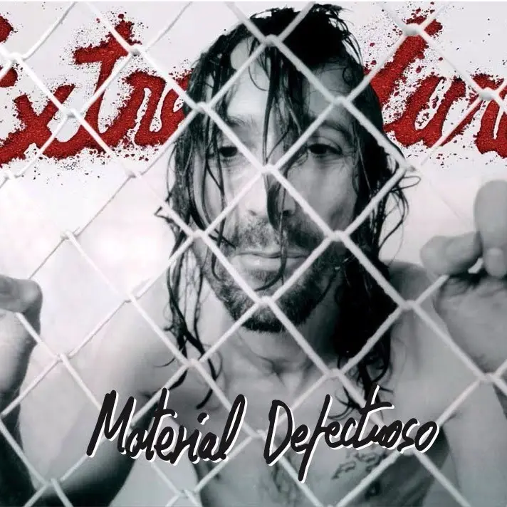
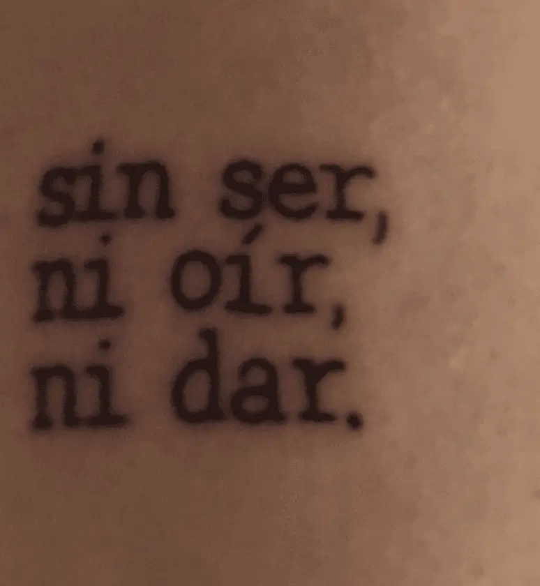
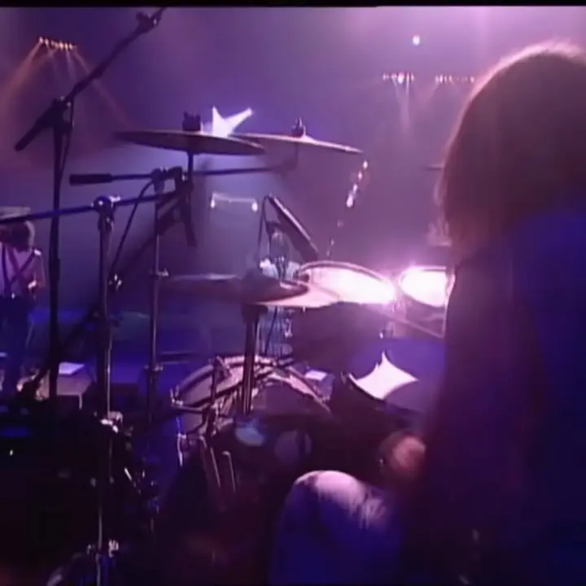
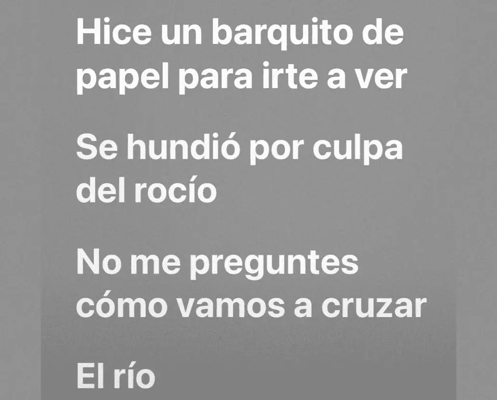
Frente a un mundo de filtros y marketing vacío, la reivindicación de la verdad desnuda. Analizar a Robe es entender que el camino se inventa a cada paso, y que ser transparente —aceptando nuestra propia "materia defectuosa"— es la única forma de caminar con orgullo (o al menos empezar). — varix. (Adrián)
Siempre había oído algo de su música, pero nunca habría sabido decirte el nombre de una canción si me la ponías a escuchar. Todo cambió este año, cuando alguno de ustedes me abrió el camino para escuchar “Yo, minoría absoluta”. Desde el primer momento, al ver la portada, supe que lo que iba a escuchar iba a ser especial y diferente. Desde su partida volví a recorrer su discografía, especialmente su trabajo en solitario, y qué pena haberme perdido durante tanto tiempo música tan buena. Pero nunca es tarde para apreciar a un gran artista y poeta de la música en español. Acabo de terminar Material Defectuoso y qué obra de arte! Gracias a los que me enviaron su música este año 🤍 By Urban
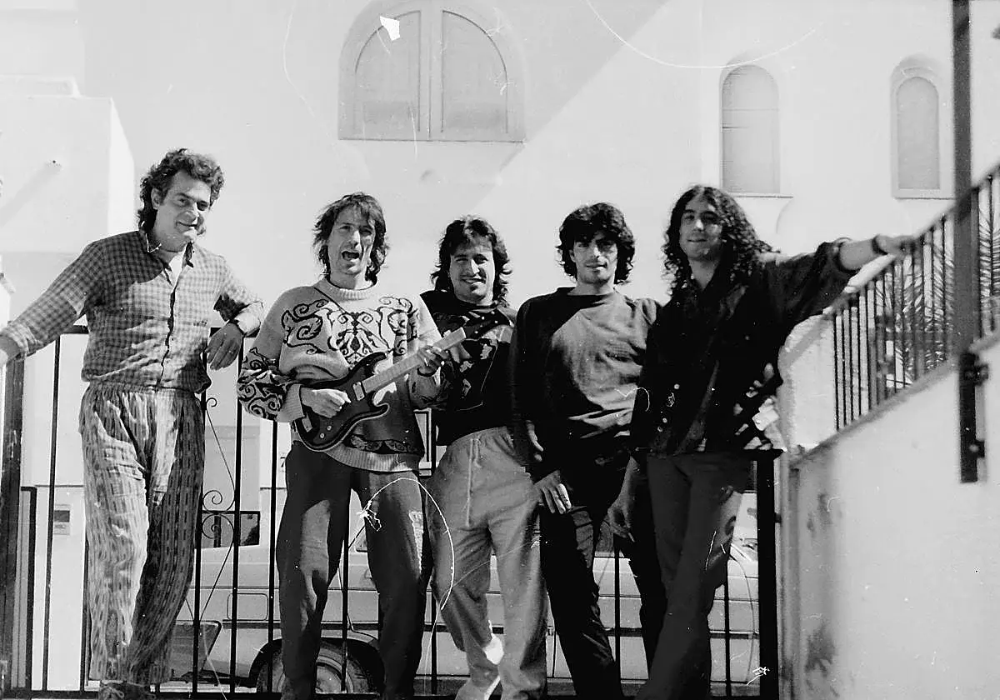
LA LEY INNATA — No está escrita, nació con nosotros. Existe una ley que no nos han enseñado; no la hemos leído ni heredado, sino que de la misma naturaleza la hemos agarrado. Una ley para la que no hemos sido educados, sino hechos; en la que no hemos sido instruidos, sino empapados. Hay obras que no se escuchan, se habitan. Es el pulso del instinto: ese impulso salvaje que nos obliga a movernos, a amar sin permiso o a reducirlo todo a cenizas para volver a empezar. Es el Derecho a ser uno mismo; el viaje hacia ese rincón de nuestra mente que nadie ha podido domesticar. Esta obra es una sola canción dividida en movimientos porque la vida no sabe descansar. Es una cadencia continua donde el sueño colisiona con el ruido, y el estruendo del mundo solo se acalla ante el peso de la verdad. Es el pulso que nos dicta cuándo retirarnos, cuándo amar. “Hice un barquito de papel para irte a ver... Se hundió por culpa del rocío… No me preguntes cómo vamos a cruzar... El río”. Y, sin embargo, decidimos nadar. El amor no es un puerto seguro, es el riesgo de la vulnerabilidad absoluta. Tan frágiles que hasta el peso de nuestras propias lágrimas nos puede derrotar. "Sin ser, ni oir, ni dar" Ya no quedan palabras que decir ni frecuencias que captar. Un vacío que solo se interrumpe por la urgencia del que busca, desesperadamente, conectar: “Y a cobro revertido quisiera estar contigo y así sintonizar”. La Ley Innata es ese refugio donde el rock trasciende la rebeldía para convertirse en humanidad. Nos recuerda que una herida abierta no es una derrota, sino un lugar donde sanar. Es el sonido del amor en su estado más puro — Una dulce introducción al caos. El sueño, la realidad. Nuestra Ley Innata, que en su estado más puro se convierte en calma — libertad. — varix. (Adrián)
Mi álbum favorito de Robe & Extremoduro. Qué tesoro su escuchar. Continúa leyendo, o viendo, o escuchando... Y sigue explorando en @weloveurban (IG).
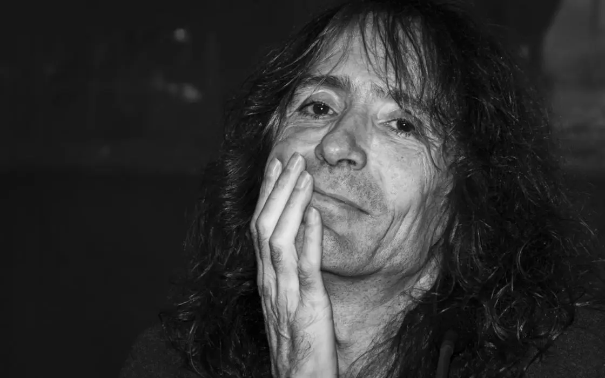
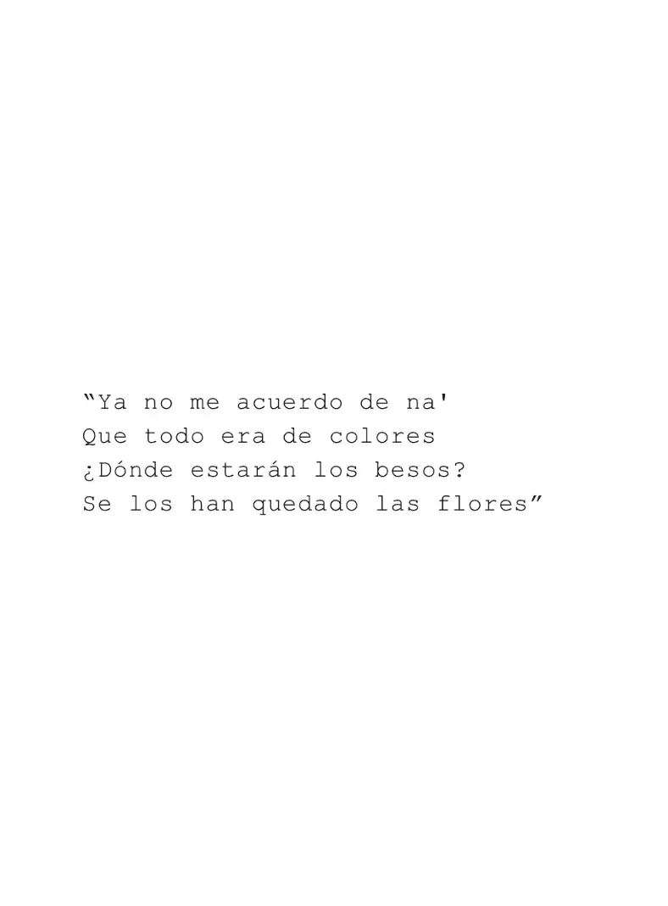
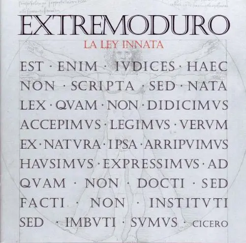
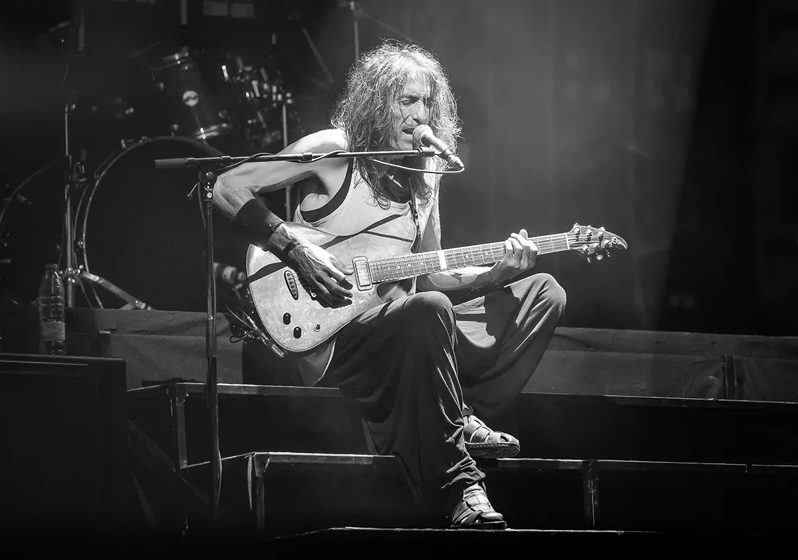
© Visual Journal ジャーナル
(WDX® — 02)
Creative Notes
más +
más +
más +
más +
más +
más +
© Visual Journal ジャーナル
(3)
Más publicaciones
Más publicaciones
© Help Center ヘルプ
(00)
Clarifications
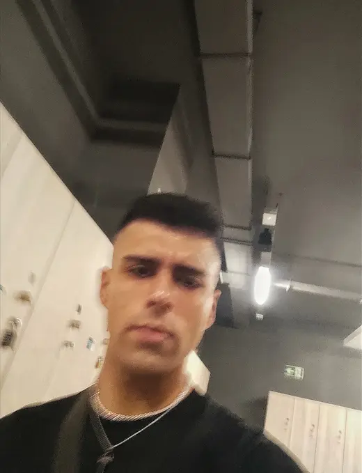
Aclarando Cuestiones. Empezando un Proceso Real y Honesto.アンサー.
Soy feliz, y eso es mucho. Soy realista, aun así elijo tener una buena perspectiva. Soy consciente de quién soy y de mi entorno. Eso me permite actuar de forma genuina y real. Aún así, a veces es necesario lanzarse a la aventura. "Caminante no hay camino, se hace camino al andar". A veces debemos dar el primer paso, y crear nuestro destino en consecuencia.
Aporto una arquitectura de pensamiento orientada a la automatización de procesos vacíos. Mi objetivo es usar la tecnología para liberar el tiempo necesario que requiere la verdadera gestión humana: el diálogo y el bienestar.
Sigo marcos de Prompting Responsable. Entiendo la IA como un soporte, no como un decisor. Realizo auditorías manuales de sesgos para asegurar que los procesos de selección sean siempre justos, diversos e inclusivos.
Porque para encontrar talento hay que saber escuchar lo que no se dice. Mi colaboración en medios digitales me ha enseñado a descifrar narrativas y a conectar con audiencias internacionales. El arte me da la empatía y el contexto cultural que a veces los datos no pueden capturar.
Más allá de mi formación con la UPenn, el inglés es un idioma que ha estado presente en mi vida de forma constante. Lo aplico de manera práctica como Music Content Collaborator en Instagram, colaborando en una de las cuentas pioneras del sector musical. Mi vida técnica y mis aficiones giran en torno a este idioma: Música, Arte, Deporte, Lectura y Filosofía. Aunque siempre hay margen de mejora para alcanzar la excelencia, cuento con la capacidad necesaria para comenzar a operar en cualquier entorno
Busco el terreno donde transicionar y convertirme en el mejor profesional. Espero encontrar líderes que gestionen por confianza y sistemas que permitan que la innovación fluya. Busco la orilla donde mi capacidad encuentre su utilidad definitiva. Poder evolucionar.
No soy "vendehumos". Nadie es perfecto. Dicho eso, realmente me considero una persona completa. Me siento orgulloso de quien soy, desde lo personal hasta lo profesional, desde mis pasiones a mis actuaciones. Me siento capaz de actuar según lo esperable; y más importante, aprender y superarme.
© Final Section クロージング
(11)
Wrap
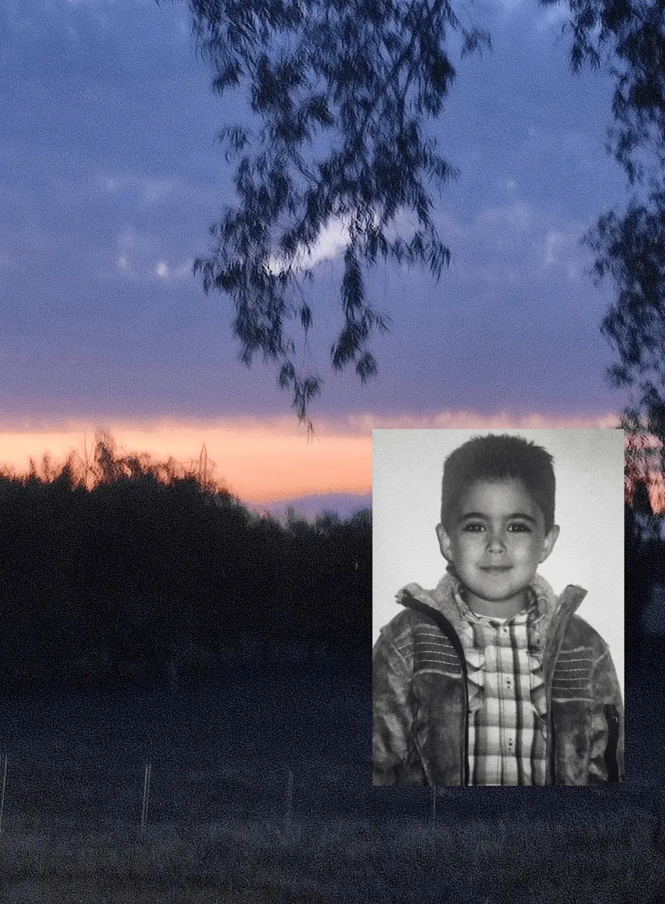
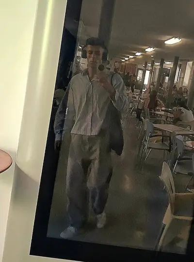
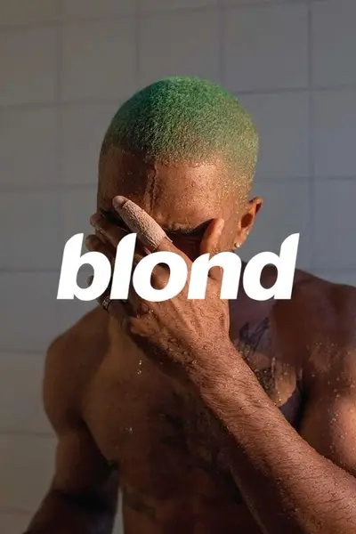
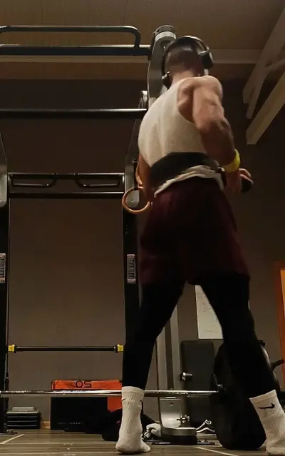
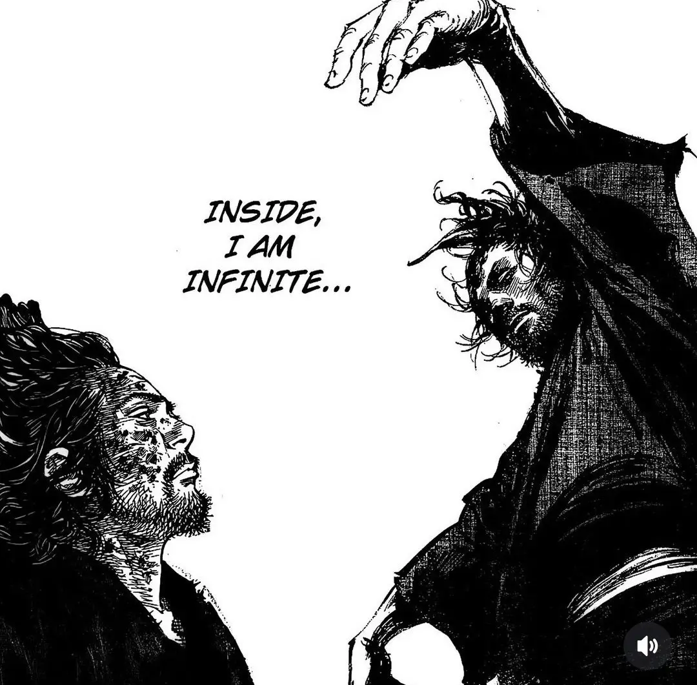
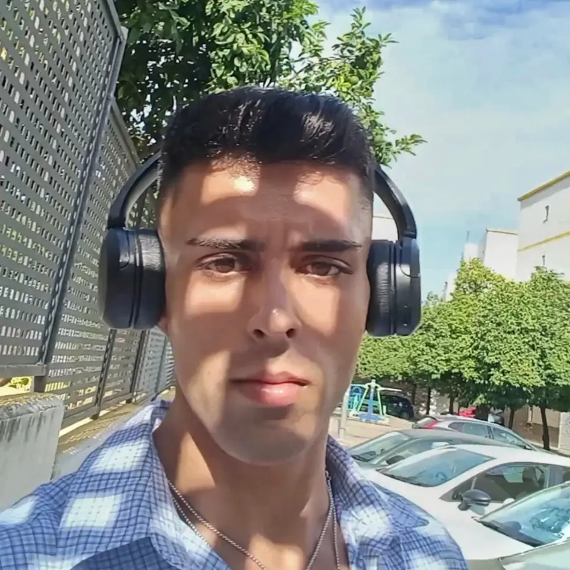
Adrián.
Talento
Tecnología
Innovación
(Cierre)
El futuro del trabajo
es una conversación.
Comencemos la nuestra.